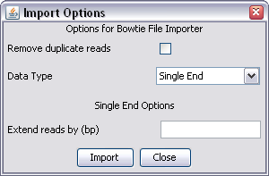

Bowtie is an extremely quick and popular sequence alignment tool.
SeqMonk can read and import the default file format generated by Bowtie. It is possible to customise the output when running the aligner, but if you do this then SeqMonk will not be able to import the data.
The default run configuration for bowtie can generate several hits for each read. SeqMonk will import all of the hits present in the file, so if you only want to see one hit per sequence you need to ensure that you run bowtie with the --best parameter to ensure no more than one hit per sequence.
SeqMonk can read either the single or paired end output format from bowtie. It expects that the sequence name will be the chromosome name.

There are no bowtie specific options so all you will see are the common options for both single and paired end data.